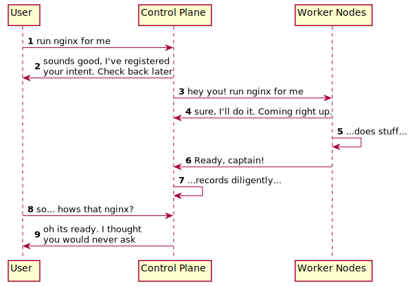

Welcome!
If you are looking to increase your knowlege of how kubernetes (k8s) works behind the scenes, you have arrived at the right place. We'll walk through a series of guided tutorials that cover:
- how k8s is architected
- what the various k8s control plane components do and how they are run
- the k8s "worker node" machinery that actually drive pod workloads
- k8s cluster (and general) networking
We'll make heavy use of links to referene k8s official documentation and other good tutorials and knowledge resources. You can choose to read them as you work through the tutorials or save them for future reference as you need.
Another thing we do is assume a pretty basic knowledge of Linux systems, so thre are a lot of side-bars, asides, and meanders. If you already have the knowledge, bear with us -- we strive to be as accessible as possible to increase both k8s knowledge and general sysadmin / computing competencies.
General Approach
- We'll make a small pit-stop to make sure you have the tools needed to actually run the workshops in this guide
- Go over k8s architecture, the responsibilites and components of the control plane and worker nodes, and networking concepts
- Walk through each individual step needed along the way needed to get k8s bare-metal cluster stood up
- Run the entire code end-to-end to get a cluster spun up on your local machine
Next Up
To get started, jump into the next section to set up everything you need to run our code on your local machine.
Prerequisites
Before we begin, we really need to ensure that your machine has the required tools needed to run the rest of this tutorial.
Clone our repository
You will need access to our source code (cough... set of bash scripts) to run the tutorials on your local machine.
git clone https://github.com/jacobdr/k8s-the-harder-way.git
Get a system package manager
System package managers can do many things, but at their core their responsibility is to get useful executables and system libraries from public sources onto your local machine. If your computer did not leave the factory with curl installed on it, a package manager would help you install that tool and make it available to you as a CLI / executable within your terminal.
Sometimes system managers install pre-built binaries (lift-and-shift the correct executable onto your local machine), other times they distribute the source code and dependencies, and provide a recipe that executes on your box to turn the source into executable files that you can then run.
Package managers are generally pretty operating system specific (e.g. Ubuntu has aptitude aka apt, OS X homebrew aka brew, CentOS/RedHat yum, Alpine apk). Each package manager distributes their "recipes" (read: packages) differently -- Cloudflare has a really friendly tutorial that unapcks how aptitude works, and Homebrew has a cookbook for how their formulae work.
Anyway, enough on package managers.... Lets actually make sure you have one.
OS X
Homebrew is required to install a series of CLI tools that our required by this project. See the official site for installation instructions. Please make sure that PATH variable where brew installs executables to is availabe on your $PATH. Their docs and StackOverflow will do a better job of helping you out... Just know by the end of this step you should be able to open a fresh terminal and run brew --help and see output.
Linux
If you are on Linux you probably already are bored by all this talk of package managers and know how to use yours.... Lets move on.
Install Required Packages + Tools
This project makes use of a few different tools that you are going to need if you want to follow along. To check what you are missing, run make check-prod from the root of the repository. It should tell you what tools (if any) you are missing and need to install via your package manager.
When all goes well it should look something like the following....
❯ make check-prod
./dev/check-required-prod-dependencies.sh
k8s::check-required-prod-dependencies.sh::INFO -- Starting to check for required system dependencies....
/opt/homebrew/bin/cfssl
/opt/homebrew/bin/cfssljson
/usr/local/bin/docker
/opt/homebrew/bin/kubectl
/usr/bin/openssl
k8s::check-required-prod-dependencies.sh::INFO -- All required production dependencies are installed
If you are misisng anything we try to provide useful inline links to the official docs of our dependendent projects that should contain installation instructions. Some of these projects should have official packages available for your package manager for easy installation, but for others you might need to download the release binary(ies) and copy it to a location available on your PATH.
Contribution Welcome: Make a PR that improves the dev/check-required-prod-dependencies.sh script with better instructions for each component
Re-run make check-prod until such time as it exits successfully (i.e. with a zero exit code) before moving on to the next step.
Kubernetes Overview (Brain Dump)
If you are arriving here and you don't know....
We'll unpack these concepts in much more detail as we go on, but we need to establish some baseline of knowledge, and no need to recreate the wheel here.
The Beginning

When people refer to a "kubernetes cluster" they tend to be referring to the capability of running a container workload in the cloud. That speaks to an outcome and not really the "well, what is it?" question -- and at its core a k8s cluster is the union of two distinct logical parts: a control plane responsible for managing the system, and a fleet (as small as 1) of "worker" nodes that can actually run container* workloads. (TODO: why "container" is in quotes -- reference various runtimes)
In "managed kubernetes environments" -- e.g. AWS Elastic Kubernetes Service (EKS), Google's GKE (Google Kubernentes Engine), Azure's AKS (Azure Kubernetes Service) -- the cloud provider tends to run the contorl plane on a user's behalf, and its completely hidden away as an implementation detail. One of the major purposes of this project is to dive head-on into the control plane, so we won't be waving any hands here.
Essentially the cloud provider agrees to operate the control plane and the customer uses the cloud provider's other services -- compute, storage, load balancers, container registries -- to power the fleet of worker nodes (and of course, make money off the use of those resources). We won't get too much into the financials but you can see why some cloud providers don't even charge for their "managed k8s" service -- while they expend some resource behind the scenes on the machinery that makes up the control plane, they anticipate users will spend money on the resources needed to actually make up the "worker" plane since it is these workers that actually run user applicaitons (aka workloads).
Now, in reality different providers have different commercial setups. Some charge for the control plane, others make it available for free but charge to make it "highly available", or charge for other features like logging... there is a spectrum. But the general idea is this: the cloud provider provides the control plane "as a service" (i.e. out of your direct, full control) and the user pays for a worker node fleet... and the two combine to create a "cluster".
So what is the control plane?
Well, thats a tough question. At the end of the day its the "command and control" infrastructure needed to actually run container workloads... It gets told to run container workloads or open ports on containers or fetch logs, passes those commands on to other folk who do the hard work, and then handles the answer.
...But that doesn't really help clarify things at all.
Often times control plane explanations begin with a discussion of control loops... we'll be lazy and do the same.
In robotics and automation, a control loop is a non-terminating loop that regulates the state of a system.Here is one example of a control loop: a thermostat in a room.
When you set the temperature, that's telling the thermostat about your desired state. The actual room temperature is the current state. The thermostat acts to bring the current state closer to the desired state, by turning equipment on or off.
In Kubernetes, controllers are control loops that watch the state of your cluster, then make or request changes where needed. Each controller tries to move the current cluster state closer to the desired state.
Which is a pretty good mental model to start with but kind of lacks the oomph we need to really understand what the contol plane does.
Let's start with a small slice of the pie -- tracing through what happens when we kubernetes to run a "container" (pod) -- as an entrypoint to understanding the responsibilities of the control plane and how it works.
Launching a pod: Level 0: The surface of the onion
If you don't know what a pod is... read the k8s pod intro
We'll go through this piece by piece, starting with a gross oversimplication and then slowly unpacking layers like an onion until we have a better sketch of what the control plane does.
So: I want to run an HTTP server serving a basic static website with the most bare-bones of "Hello World" index html file. Nginx is fine, so lets have it be nginx.

Alright, so that seems logical enough. Lets unpack it a bit.
The User in this basic example is someone invoking an RPC (remote command invocation) call against an API server being run as part of the control plane. How that RPC call might take several manifestations but at its most basic it can be an HTTP request where the body contains the intent to run nginx. It might look like the below:
apiVersion: apps/v1
kind: Deployment
metadata:
name: nginx
labels:
app: nginx
spec:
replicas: 1
selector:
matchLabels:
app: nginx
template:
metadata:
labels:
app: nginx
spec:
containers:
- name: nginx
image: nginx:1.14.2
ports:
- containerPort: 80
And it really is that simple. If I were to run kubectl apply -f - <<<"CONTENTES FROM ABOVE", kubectl simply takes my user input, validates it, looks up the details of the API server like its host and port, looks up some credentials, and then packages the YAML up into a pretty little HTTP request and sends it along to the remote server (perhaps with a sprinking of credentials). The "control plane API server" validates the permissions of the user making the HTTP request, validates the payload matches the expected schema for a "create deployment" request, and, if all looks good, continues on in the sequence as we drew it above.
I mean the emperor wears no clothes here, see for yourself:
❯ kubectl apply -f output/nginx.deployment.yaml --v=8
I0929 15:15:17.887777 37013 loader.go:374] Config loaded from file: /Users/jroberts/repos/personal/k8s-the-harder-way/output/kube-configs/admin.kubeconfig
I0929 15:15:17.888660 37013 round_trippers.go:463] GET https://127.0.0.1:6443/openapi/v2?timeout=32s
I0929 15:15:17.888668 37013 round_trippers.go:469] Request Headers:
I0929 15:15:17.888673 37013 round_trippers.go:473] User-Agent: kubectl/v1.25.0 (darwin/arm64) kubernetes/a866cbe
I0929 15:15:17.888676 37013 round_trippers.go:473] Accept: application/com.github.proto-openapi.spec.v2@v1.0+protobuf
I0929 15:15:17.903929 37013 round_trippers.go:574] Response Status: 200 OK in 15 milliseconds
I0929 15:15:17.903944 37013 round_trippers.go:577] Response Headers:
I0929 15:15:17.903948 37013 round_trippers.go:580] Date: Thu, 29 Sep 2022 22:15:17 GMT
I0929 15:15:17.903951 37013 round_trippers.go:580] Etag: "9DB40C853CA3ADDD649055A9853FE28D1264FAEE1DBFA41212431A2A7B89BAC87C7E2059BAEC006DA5856A114731A4658CCA9BFFCB82FEB3B45304C9D8237EBB"
I0929 15:15:17.903955 37013 round_trippers.go:580] X-Kubernetes-Pf-Prioritylevel-Uid: 5dfa948e-cd85-4716-9e5e-60b0081f1d1e
[...TRUNCATED...]
I0929 15:15:17.990891 37013 round_trippers.go:463] POST https://127.0.0.1:6443/apis/apps/v1/namespaces/default/deployments?fieldManager=kubectl-client-side-apply&fieldValidation=Strict
I0929 15:15:17.990897 37013 round_trippers.go:469] Request Headers:
I0929 15:15:17.990901 37013 round_trippers.go:473] Accept: application/json
I0929 15:15:17.990904 37013 round_trippers.go:473] Content-Type: application/json
I0929 15:15:17.990908 37013 round_trippers.go:473] User-Agent: kubectl/v1.25.0 (darwin/arm64) kubernetes/a866cbe
I0929 15:15:18.004996 37013 round_trippers.go:574] Response Status: 201 Created in 14 milliseconds
I0929 15:15:18.005028 37013 round_trippers.go:577] Response Headers:
I0929 15:15:18.005039 37013 round_trippers.go:580] Cache-Control: no-cache, private
I0929 15:15:18.005048 37013 round_trippers.go:580] Content-Type: application/json
I0929 15:15:18.005058 37013 round_trippers.go:580] X-Kubernetes-Pf-Flowschema-Uid: 83eb73fc-81b4-435a-b45a-8d28a44a3f08
I0929 15:15:18.005067 37013 round_trippers.go:580] X-Kubernetes-Pf-Prioritylevel-Uid: 5dfa948e-cd85-4716-9e5e-60b0081f1d1e
I0929 15:15:18.005075 37013 round_trippers.go:580] Content-Length: 2392
I0929 15:15:18.005084 37013 round_trippers.go:580] Date: Thu, 29 Sep 2022 22:15:18 GMT
I0929 15:15:18.005145 37013 request.go:1073] Response Body: {"kind":"Deployment","apiVersion":"apps/v1","metadata":{"name":"nginx","namespace":"default","uid":"4599327e-a8fc-4eb0-9dfd-ac4be1ef3f0d","resourceVersion":"3173","generation":1,"creationTimestamp":"2022-09-29T22:15:17Z","labels":{"app":"nginx"},"annotations":{"kubectl.kubernetes.io/last-applied-configuration":"{\"apiVersion\":\"apps/v1\",\"kind\":\"Deployment\",\"metadata\":{\"annotations\":{},\"labels\":{\"app\":\"nginx\"},\"name\":\"nginx\",\"namespace\":\"default\"},\"spec\":{\"replicas\":1,\"selector\":{\"matchLabels\":{\"app\":\"nginx\"}},\"template\":{\"metadata\":{\"labels\":{\"app\":\"nginx\"}},\"spec\":{\"containers\":[{\"image\":\"nginx:1.14.2\",\"name\":\"nginx\",\"ports\":[{\"containerPort\":80}]}]}}}}\n"},"managedFields":[{"manager":"kubectl-client-side-apply","operation":"Update","apiVersion":"apps/v1","time":"2022-09-29T22:15:17Z","fieldsType":"FieldsV1","fieldsV1":{"f:metadata":{"f:annotations":{".":{},"f:kubectl.kubernetes.io/last-applied-configuration":{}},"f:labels":{".":{},"f:app":{}}},"f [truncated 1368 chars]
deployment.apps/nginx created
I0929 15:15:18.005711 37013 apply.go:466] Running apply post-processor function`
Sure there was a little back and forth in the beginning related to validation (kubectl by default actually tries to apply client-side validation by first looking up the OpenAPI scheme associated with the API server it going to send the request to eventually, which can be turned off with the --validate='ignore'). But do you see the line POST https://127.0.0.1:6443/apis/apps/v1/namespaces/default/deployments?fieldManager=kubectl-client-side-apply&fieldValidation=Strict? Pretty much did what I told you. (Note, this is actually a lie, but its a white lie... if we set --server-side=true it wouldn't be though).
TODO: Add a page on kubectl and client-side application and validation
Launching a pod: Level 1: Unpacking the components on the control plane
So pretty conveniently in the above sequence diagram we just draw a box for the "control plane" actor up at the top. But the control plane isn't just this API server thing we alluded to in the prior section. Its actually a few different components all working together that create the apparition we call the "control plane".
Chapter 0 - VM Bootstrapping
Code
#!/usr/bin/env bash
set -euo pipefail
: "${PROJECT_ROOT?? PROJECT_ROOT must be defined}"
: "${VM_RUNTIME?? VM_RUNTIME must be defined}"
: "${CNT_VMS:?CNT_VMS must be defined}"
: "${HOSTNAME_PREFIX:?HOSTNAME_PREFIX must be defined}"
: "${DOWNLOAD_CACHE_DIR:?DOWNLOAD_CACHE_DIR must be defined}"
log_info "Starting to create ${CNT_VMS} VMs with runtime ${VM_RUNTIME}"
if [[ "${VM_RUNTIME}" = "docker" ]]; then
docker build -f "${PROJECT_ROOT}/Dockerfile" -t k8s-hard-way --load "${PROJECT_ROOT}"
(docker ps -a | grep k8s-hard-way | awk '{print $1}' | xargs docker rm -f) &>/dev/null || :
sleep 2
mkdir -p "${PROJECT_ROOT}/output/downloads"
elif [[ "${VM_RUNTIME}" = "lima" ]]; then
sudo rm -rf /private/var/run/lima
limactl sudoers | sudo tee /private/etc/sudoers.d/lima 1>/dev/null
fi
WORKER_ITERATOR=1
while [ "$WORKER_ITERATOR" -le "${CNT_VMS}" ]; do
log_info "Starting to launch VM ${WORKER_ITERATOR} of ${CNT_VMS} using ${VM_RUNTIME}"
VM_HOSTNAME="${HOSTNAME_PREFIX}${WORKER_ITERATOR}"
if [[ "${VM_RUNTIME}" = "docker" ]]; then
docker rm -f --volumes "${VM_HOSTNAME}"
docker run \
--name "${VM_HOSTNAME}" \
--hostname="${VM_HOSTNAME}" \
--detach \
--privileged \
--cap-add=NET_ADMIN \
--tmpfs /run/lock \
--volume "${VM_HOSTNAME}-temp:/tmp" \
--volume "${PROJECT_ROOT}:${PROJECT_ROOT}:ro" \
--volume "${PROJECT_ROOT}/output/downloads:${DOWNLOAD_CACHE_DIR}" \
k8s-hard-way
elif [[ "${VM_RUNTIME}" = "lima" ]]; then
limactl stop "${VM_HOSTNAME}" &>/dev/null || limactl stop "${VM_HOSTNAME}" --force &>/dev/null || true
limactl delete "${VM_HOSTNAME}" &>/dev/null || limactl delete "${VM_HOSTNAME}" --force &>/dev/null || true
true | (limactl start --name "${VM_HOSTNAME}" "${PROJECT_ROOT}/lima-config.yaml") 2>&1 | cat # grep 'progress|requirement|WARN|FAT'
fi
log_info "Successfully launched VM ${WORKER_ITERATOR} (runtime: ${VM_RUNTIME})"
WORKER_ITERATOR=$((WORKER_ITERATOR + 1))
done